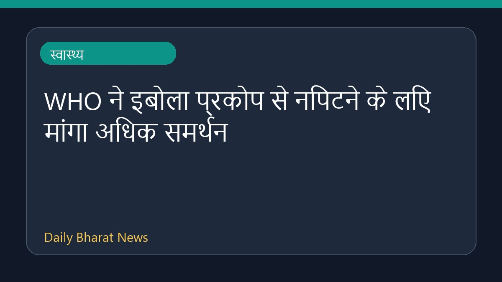

WHO ने इबोला प्रकोप से निपटने के लिए मांगा अधिक समर्थन

विश्व स्वास्थ्य संगठन (WHO) ने इबोला के प्रकोप से निपटने के लिए वैश्विक स्तर पर अधिक समर्थन की अपील की है। डेमोक्रेटिक रिपब्लिक ऑफ़ कॉन्गो में इबोला का बुन्डिबुग्यो स्ट्रेन प्रकोप अब तक का सबसे बदतर बताया गया है। इस बीच, WHO और राहत एजेंसियां स्थिति पर नजर बनाए हुए हैं और आपातकालीन प्रतिक्रिया के तहत लॉजिस्टिक्स व स्थिति से जुड़े अपडेट साझा किए जा रहे हैं।
मूल स्रोत: Health News Sources
WHO calls for more support to tackle Ebola outbreak - africanews.com ↗
WHO calls for more support to tackle Ebola outbreak - africanews.com ↗